HPE Helion 2.0 Development Platform: Deploying your first .NET Application
Windows, .NET, SQL Server, and IIS are either registered trademarks or trademarks of
Microsoft Corporation in the United States and/or other countries.
This tutorial demonstrates how to deploy an application to a Windows Server instance
running in an HPE Helion OpenStack® environment using the toolset provided. For the purposes
of this tutorial, you'll deploy Microsoft's Contoso University sample
application.
System requirements
This tutorial requires the following software components:
Deploy the sample application from Visual Studio
- Open <sample directory>/C#/ContosoUniversity.sln in Visual
Studio.
- Install the Cloud Foundry MSBuild Tasks following these directions here: Cloud Foundry MSBuild Tasks
Windows and .NET Tools Guide: Cloud Foundry Explorer
- In Visual Studio, open web.config.
- Change the following configuration line (this will pull the connection string parameters
from environment variables, rather than using hardcoded values):
<add name="SchoolContext"
connectionString=
"Data Source=(LocalDb)\v11.0;
Initial Catalog=ContosoUniversity2;
Integrated Security=SSPI;"
providerName="System.Data.SqlClient"
/>
to:
<add name="DefaultConnection"
connectionString="{ContosoUniversity-db#connectionString}"
providerName="System.Data.SqlClient" />
- Save web.config.
- Build the project locally to verify that it builds correctly, and all NuGet packages
successfully install. Once the project builds successfully, go to the next step.
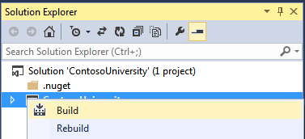
- Right click the project and select Publish to Cloud Foundry.
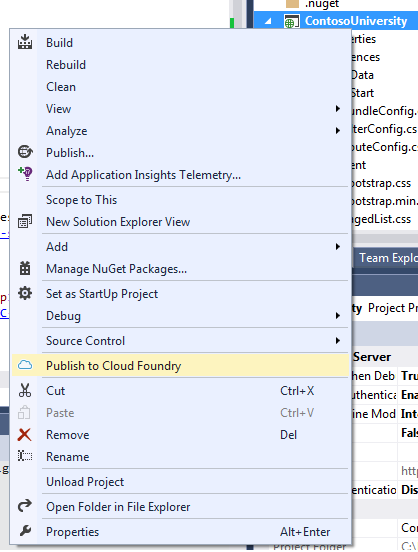
- In the first Publish to Cloud Foundry dialog (Target), enter the following values and click Next:
- Profile: A friendly name to use to store this publish profile.
- Target: The URL of the ALS cluster
- Organization and Space: Select from one of the provided options.
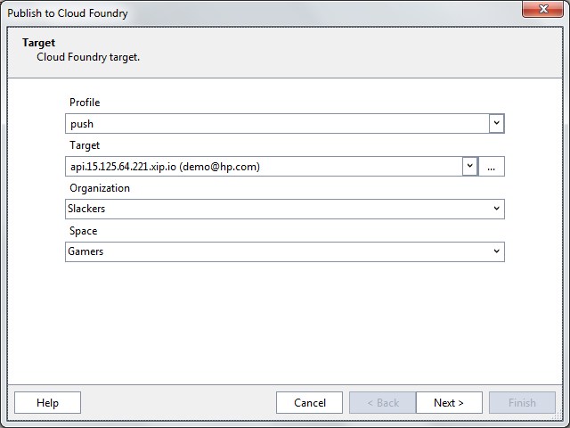
- In the second Publish to Cloud Foundry dialog (Application), enter the following values and click Next:
- Name: The friendly name for the application
- Buildpack: Select from one of the provided options. The default is <<Auto-Detect>>.
- Stack: Leave as win2012r2.
- Memory: The amount of memory the application will use (e.g. 512 MB).
- Instances: The number of separate installations of the application.
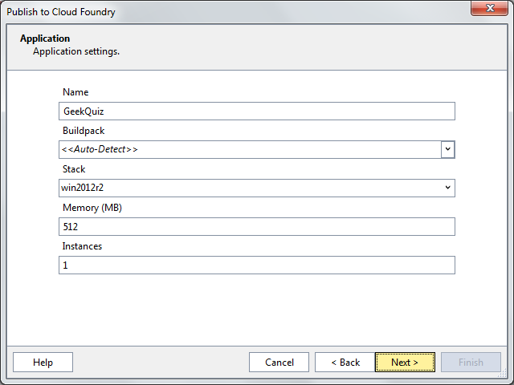
- In the third Publish to Cloud Foundry dialog (Routes), enter the following values and click Next:
- Hosts: Add the host name that the application will use. This host name will be added to the cluster domain; for instance, in the image below, the URL to access the application will be mygeekquiz.15.125.64.221.xip.io
- Shared Domains: Select from one of the available options.
- Private Domains: Select from one of the available options.
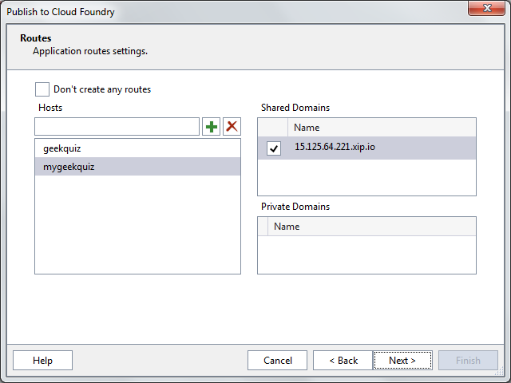
- In the fourth Publish to Cloud Foundry dialog (Services), if a service is needed for your application, either select from one of the available services, or select Create Service.
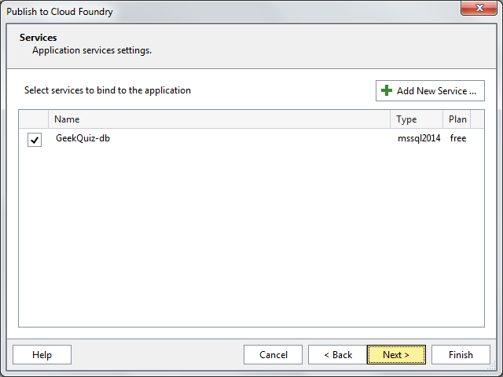
- If you clicked Create Service in the previous step, enter the following values in the Create Service Instance dialog and click OK:
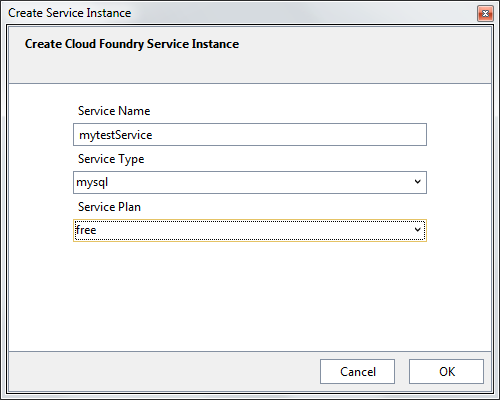
The new service will appear in the Services dialog:
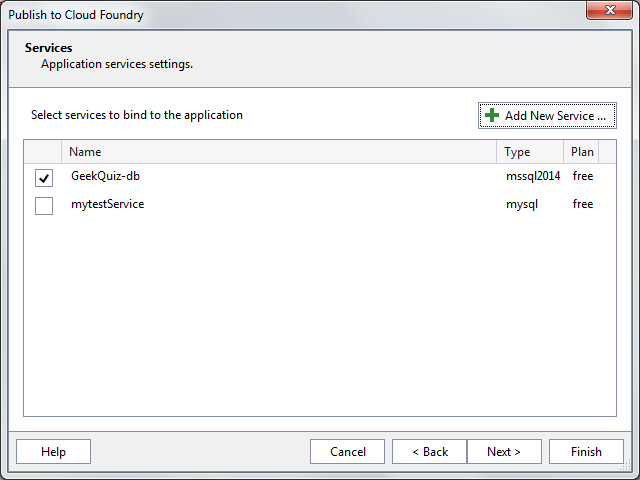
- In the next Publish to Cloud Foundry dialog (Environment Variables), enter key-value pairs that can be read by the application using the VCAP_APPLICATION environment variable. In the screenshot below, an environment variable called isDebug
is created with a value of True.
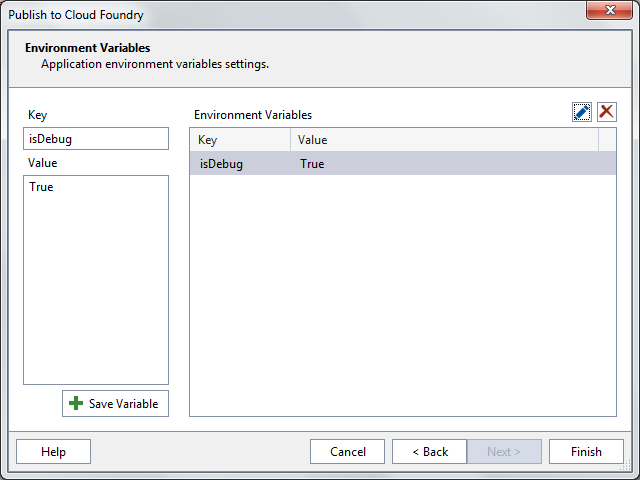
- Click Finish. The application will be deployed to the selected Helion environment.
- Open or refresh Cloud Foundry Explorer. You can open Cloud Foundry Explorer under
View->Other Windows->Cloud Foundry Explorer.
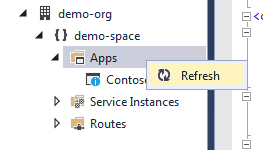
- Right click the "Contoso" application and select View in Browser:
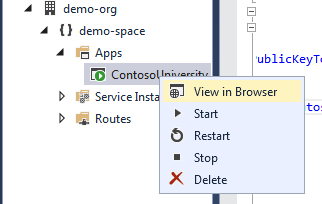
That's it! You are ready to use your application.
Deploy the sample application from the command line
If you are deploying
your application from the command line, you do not need Visual Studio to deploy your
application. You can deploy it using the Helion client tool. For more information about using
the Helion client tool with Windows applications, see
Windows and .NET Tools Guide. One
advantage of using the command line is that you can use Mac or Linux as well as Windows to
deploy your application. Typically, a push is run with the tool in the solution directory, the
client tool uploads the application, and the application is built on the server.
- Open Web.config with a text editor
- Change the following configuration line (this will pull the connection string
parameters from environment variables, rather than using hardcoded values):
<add name="SchoolContext"
connectionString="Data Source=(LocalDb)\v11.0;
Initial Catalog=ContosoUniversity2;
Integrated Security=SSPI;"
providerName="System.Data.SqlClient" />
to:
<add name="DefaultConnection"
connectionString="{ContosoUniversity-db#connectionString}"
providerName="System.Data.SqlClient" />
- Create a new file called manifest.yml in the same directory as your
project file, with the following contents. This is the application manifest file, which
the deployment tool will use to determine what to do with the application.
Note: When
deploying from Visual Studio, the deployer will find manifest.yml using
the solution file, so it doesn't need to be in any specific location. If you are
deploying your solution using the command line to a production environment, it is recommended to use the
--manifest setting to specify the location of
manifest.yml. If the --manifest setting is not
specified, the directory containing the project file will be searched, but this may lead
to deploying more files than intended, such as code or the project file itself.
---
applications:
-name: ContosoUniversity
mem: 512M
services:
${name}-db:
type: mssql2014
- Use the Helion ALS
Client (Helion.exe) to deploy the application. Run this command in the same
directory as manifest.yml (The -n parameter suppresses
prompts about defaults that the script uses):
helion target <cluster URL>
helion login
helion push --stack win2012r2 -n
- When the push completes, the command line will show the application URL (e.g.
ContosoUniversity.xx.xx.xx.xx.xip.io).
- Browse to the application URL to verify the deployment.
Configure Windows DEA to view application files in the management console
When the new DEA is created, applications can only be viewed on the command line. Follow these steps to view applications in the management console:
- Connect to the DEA through the application console:
- In the Horizon interface, select Project, Instances.
- Select your Windows DEA instance from the Instances list. Select the Console tab to open the instance console.
- Click Ctrl+Alt+Delete. Select the Administrator account. Assign a new password.
- From the command line, execute taskmgr.
- Select More Details... Select File, Run new task. Enter powershell as the new task and click OK.
- Run cd c:\windea
- Run notepad dea.config
- Verify that the value for directoryserver v2port is 5678. Save and close the file.
- Run netsh advfirewall firewall add rule name="v2 DirectoryServer" protocol=TCP dir=in localport=5678 action=allow
- Run net stop windea
- Run net start windea
- Sign out of the instance console.
- Log into the instance's management console (e.g. https://api.15.126.136.34.xip.io/console/).
- Select Applications.
- Your deployed application will appear in the list of applications.